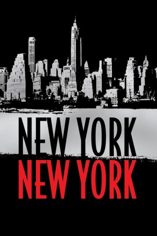
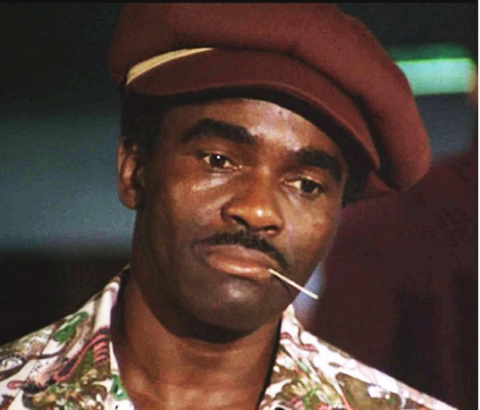

#6379 New York, New York
 
 IMDB-Wertung: 6.7 / 10
IMDB-Wertung: 6.7 / 10  Tomatometer: 59
Tomatometer: 59  Metascore: 0
Metascore: 0 
Am Tag nach Ende des Zweiten Weltkriegs lernt der aufstrebende Saxofonist Jimmy Doyle die erfolgreiche Sängerin Francine kennen, die ihn zunächst einmal abblitzen lässt. Doch je öfter sie sich im Nachtleben treffen, desto näher kommen sich die beiden, bis sie sich ineinander verlieben und schließlich heiraten. Die Ehe ist nur kurz glücklich: Die Last des kreativen Drucks ist zu groß, als dass die beiden auf Dauer miteinander auskommen könnten.
Jahr: 1977
Dauer: 163 Minuten
FSK: 6
Land: USA Studio: United ArtistsTonspuren: DTS - ,
Untertitel: Deutsch,
Auflösung: 1080p (1792x1080) Größe: 13004 MB
Genre: Drama, Musik, Musical
Regisseur:  Martin Scorsese
Martin Scorsese
Drehbuch: Earl Mac Rauch
Soundtrack:
Darsteller:
- Liza Minnelli als Francine Evans
 Robert De Niro als Jimmy Doyle
Robert De Niro als Jimmy Doyle Lionel Stander als Tony Harwell
Lionel Stander als Tony Harwell- Barry Primus als Paul Wilson
 Mary Kay Place als Bernice Bennett
Mary Kay Place als Bernice Bennett Dick Miller als Palm Club Owner
Dick Miller als Palm Club Owner- Clarence Clemons als Cecil Powell
- Dimitri Logothetis als Desk Clerk
 Frank Sivero als Eddie Di Muzio
Frank Sivero als Eddie Di Muzio- Diahnne Abbott als Harlem Club Singer
 Don Calfa als Gilbert
Don Calfa als Gilbert Bill Baldwin als Announcer in Moonlit Terrace
Bill Baldwin als Announcer in Moonlit Terrace Casey Kasem als D.J. aka Midnight Bird
Casey Kasem als D.J. aka Midnight Bird- Peter Savage als Horris Morris' Assistant
- Shera Danese als Doyle's Girl in Major Chord
 Harry Northup als Alabama
Harry Northup als Alabama Charles A. Tamburro als Bouncer in Up Club
Charles A. Tamburro als Bouncer in Up Club Hank Robinson als Francine's Bodyguard
Hank Robinson als Francine's Bodyguard-  Eddie Smith als Man in Bathroom in Harlem Club
 Ottaviano Dell'Acqua als Dancer , uncredited
Ottaviano Dell'Acqua als Dancer , uncredited- Joey Forman als Argumentative Man , uncredited
- Jack Haley als Master of Ceremonies / Cameo Appearance , uncredited
- Georgie Auld als Frankie Harte
- George Memmoli als Nicky
- Murray Moston als Horace Morris
- Leonard Gaines als Artie Kirks
- Kathi McGinnis als Ellen Flannery
- Norman Palmer als Desk Clerk
- Adam David Winkler als Jimmy Doyle Jr.
- Margo Winkler als Argumentative Woman
- Steven Prince als Record Producer
- Bernie Kuby als Justice of the Peace
 Selma Archerd als Wife of Justice of the Peace
Selma Archerd als Wife of Justice of the Peace- Mary Lindsay als Hat Check Girl in Meadows
- Jon Cutler als Musician in Frankie Harte Band
 Nicky Blair als Cab Driver
Nicky Blair als Cab Driver- Jay Salerno als Bus Driver
- William Tole als Tommy Dorsey
- Sydney Guilaroff als Hairdresser
- Gene Castle als Dancing Sailor
- Louis Guss als Frankie Harte Band Member
- Bill McMillan als D.J.
- David Nichols als Arnold Trench
- Marty Zagon als Manager of South Bend Ballroom
- Timothy Blake als Nurse
- Betty Cole als Charwoman
- DeForest Covan als Porter
- Phil Gray als Trombone Player in Jimmy Doyle's Band
- Roosevelt Smith als Bouncer in Major Chord
- Bruce L. Lucoff als Cab Driver
Datei: X:\1977\New York, New York (1977, FSK6, 1792x1080).mkv seit 12.06.2017
Festplatte: HD 1971-1979
 Es gibt insgesamt 33 Filme in der Gruppe '1977'
Es gibt insgesamt 33 Filme in der Gruppe '1977'